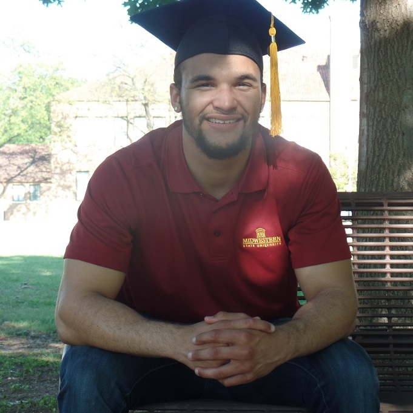

About Me
I am an energetic, optimistic, adaptable, and hard-working individual with experience in software development, mobile app development, web development, and desktop development (C#) -- with knowledge of customer relationship management, deep learning, and computer networking.
I received my Bachelor's of Science degree in computer science from Midwestern
State University in May 2019. I first discovered my love
for computer science as a high school junior. Any ordinary programmer will tell you
how captivating it was to see
Hello World display to the screen after his or her first program, but it's the
problem-solving aspect of coding that truly got me hooked.
I enjoy being counted on under pressure and I tend to thrive in group projects or other situations involving teamwork. There is something about gaining the trust and support from others that motivates me. I possess a very attention to detail mindset that drives me to work on projects until I feel they are done to a tee of what is expected, and it is typically easy for me to adapt my coding tendencies to those I work alongside. I am also never shy to ask for help or add valuable input.